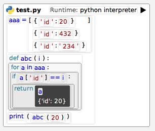

Sandblocks/TreeSitter Runtimes
The runtimes system as part of Sandblocks-TreeSitter allows you to execute code from supported languages. It comes with support for monitoring its stdout/stderr and injecting watches that report back to the Sandblocks IDE.
Opening and Running a File
In a Sandblocks workspace, run:
(SBTSFile filepath: '/home/you/test.py') open
At the top of the file will be a Play button. Once clicked, it will try to find a python interpreter on your system and execute the given file.

Evaluating Foreign Code
If you want to evaluate a snippet of code, use e.g.
SBPython instance runtime evaluate: 'print("Hello!")'
The return value will be the stdout of the program snippet.
To receive stderr or to execute code asynchronously, check if your runtime implements #evaluateFileAsync:cancel:. Refer to its senders for examples on how to use the corresponding API.
Watches
You can insert a watch on any block moment but most likely inserting it on anything but an expression will result in a syntax error upon serialization or execution.
Insert a watch by either right-clicking the expression and filtering for wrapWithWatch or by pressing the Cmd+Shift+W shortcut.
Offscreen Watches
By placing watches offscreen, you can use them to report values from the runtime back to your TreeSitter replacement blocks.
For example, we could make all Javascript console.log calls log to the Squeak Transcript as well by creating a replacement for console.log and serializing the expression with the watch's source code wrapped around it (see also SBConsoleLogReporter class that comes with Sandblocks):
SBConsoleLogReporter>>initialize
super initialize.
" create a new empty watch and connect its reportedValue signal to our
newValue: method "
watch := SBTSWatch newEmpty when: #reportedValue send: #newValue: to: self
SBConsoleLogReporter>>writeSourceOn: aStream
" update the watch's expression to the expression our replacement is wrapping "
watch expression: self expression.
aStream nextPutAll: 'console.log('.
watch writeSourceOn: aStream.
aStream nextPutAll: ')'
SBConsoleLogReporter>>newValue: aString
" apparently our watch triggered a reportedValue signal, so we're called "
Transcript showln: aString
You can also use this with custom code to extract specific values from the runtime:
SBRequestReplacement>>initialize
watch := SBTSWatch newEmpty when: #reportedValue send: #newRequest: to: self
SBRequestReplacement>>writeSourceOn: aStream
" we are inserting this object literal in the code that expects a `req` variable
to be in the local scope and reporting the object back to squeak "
watch expression: (SBJavascript parseElement:
'{path: req.path, headers: req.headers.map(h => [h.key, h.value])}').
" ...our other serialization code, then our watch at a place where it's
syntactically valid "
watch writeSourceOn: aStream.
" ...more serialization code "
SBRequestReplacement>>newRequest: aString
" we get the data as a string, which we can then decode "
data := Json readFrom: aString.
Transcript showln: data headers
Pretty-Printing
Runtimes may support pretty printing code. If they do, whenever code is serialized to text (e.g., when copying or writing to a file), the #prettySourceString is called on the block, which passes the regular #sourceString of the block to the external pretty printer.
Javascript Web Runtime
The Javascript web runtime is special in that it does not actually invoke any programs. Instead, it will only spawn a server that listens for watches to trigger.